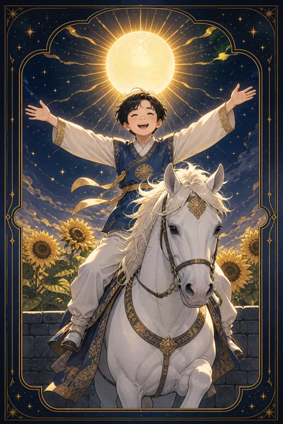

XIX 태양 카드 — 숨김없이 환하게 빛나는 때
태양 카드 한눈에 보기
태양 카드 상징 읽기

동네보살의 카드 그림은 전통 라이더–웨이트 덱의 뜻을 새 그림으로 옮긴 것입니다. 아래 상징 설명은 전통 덱의 그림을 기준으로 합니다.
하늘에는 사람 얼굴을 한 커다란 태양이 곧은 빛줄기와 물결치는 빛줄기를 번갈아 내뿜고 있습니다. 모든 것을 환하게 비추는 이 빛은 감출 것 없는 진실과 생명력을 뜻합니다.
그 아래 백마에 올라탄 벌거벗은 아이가 두 팔을 벌리고 웃고 있습니다. 아이는 계산이나 두려움 없이 삶을 누리는 순수함을, 안장 없이 탄 흰 말은 억누르지 않고도 조화를 이루는 힘을 상징합니다.
아이 손에 들린 붉은 깃발은 활기찬 기운과 승리의 선언입니다. 뒤편 돌담 위로 피어난 해바라기들은 모두 빛을 향해 고개를 돌리고 있어, 성장과 풍요 그리고 과거라는 담을 넘어선 자유를 보여줍니다.
아이의 머리에는 해바라기 화관과 붉은 깃털이 꽂혀 있는데, 이는 새롭게 깨어난 의식과 삶의 기쁨을 기꺼이 받아들이는 마음을 뜻합니다. 그림자 하나 없는 한낮의 풍경은 오해나 감춰진 속셈이 끼어들 틈이 없는 투명한 상태를 보여줍니다.
태양 카드 정방향 뜻
정방향 태양은 오래 기다려온 일이 환한 결과로 드러나는 시기를 뜻합니다. 노력이 인정받고, 망설이던 문제에 명쾌한 답이 보이며, 하루하루에 생기가 차오르는 흐름입니다.
이 카드의 가장 큰 선물은 자신을 있는 그대로 보여줘도 괜찮다는 확신입니다. 지나치게 겸손해하거나 눈치를 보며 성과를 숨길 필요가 없습니다. 기쁜 일은 기쁘다고 말하고, 잘한 일은 스스로 칭찬해 주셔도 좋은 때입니다.
또한 태양은 관계를 따뜻하게 하는 힘도 지녔습니다. 가족이나 친구와 함께 웃는 시간이 늘고, 나의 밝은 기운이 주변에도 전해집니다. 이 좋은 흐름을 오래 이어가려면 그 빛을 혼자 독차지하기보다 도와준 사람들과 나누는 마음을 잊지 마세요. 누군가에게 받은 도움을 기억하고 감사의 말을 전하면 그 빛은 더 오래 머뭅니다.
태양 카드 역방향 뜻
역방향 태양은 해가 진 것이 아니라 잠시 구름이 지나가는 모습에 가깝습니다. 좋은 결과가 예정보다 늦어지거나, 기대만큼 크게 드러나지 않아 아쉬움이 남는 흐름입니다. 그래도 가고 있는 방향 자체는 틀리지 않았다는 점이 이 카드의 위안입니다.
때로는 반대로 지나친 낙관을 경고하기도 합니다. 일이 잘 풀린다는 기분에 세부 점검을 건너뛰거나, 주변의 조언을 가볍게 넘기고 있지는 않은지 돌아보시길 권합니다.
또 다른 해석은 내면의 빛이 작아진 상태입니다. 남과 비교하며 스스로의 성취를 초라하게 여기고 있다면, 이미 이룬 것들을 적어보는 것만으로도 가려진 햇빛이 다시 얼굴을 내밉니다.
조급해하지 않고 해야 할 일을 묵묵히 이어가다 보면 구름은 생각보다 빨리 지나갑니다. 작은 성취라도 스스로 축하해 주는 습관이 다시 빛을 불러옵니다.
연애에서 태양 카드
솔로라면 밝고 자연스러운 매력이 돋보이는 시기라 새로운 만남의 기회가 늘어납니다. 모임이나 야외 활동처럼 사람들과 어울리는 자리에서 편안하게 웃는 모습이 좋은 인상을 남깁니다. 마음에 드는 사람이 있다면 돌려 말하기보다 솔직하게 호감을 표현해도 괜찮은 흐름입니다.
연애 중이라면 관계가 한층 따뜻하고 투명해집니다. 서로에 대한 확신이 커져 주변에 연인을 소개하거나, 함께하는 미래를 구체적으로 이야기하는 계기가 생길 수 있습니다. 함께 여행을 가거나 새로운 경험을 나누면 즐거운 추억이 관계를 더 단단하게 합니다. 사소한 오해가 있더라도 해맑게 웃으며 풀어낼 수 있는 여유가 두 사람에게 있습니다. 기쁜 마음을 아끼지 말고 표현할수록 상대도 더 환하게 마음을 열어 보이기 쉽습니다.
재회·속마음 질문에서 태양 카드
재회 질문에서 태양이 나오면 상대가 당신과 함께했던 시간을 밝고 좋은 기억으로 간직하고 있을 가능성이 높게 읽힙니다. 감정의 앙금이 크지 않아 편하게 다시 연락을 주고받을 수 있는 분위기입니다.
다만 태양은 숨김없는 솔직함을 요구합니다. 다시 만나고 싶다면 애매한 신호보다 분명한 말로 마음을 전하는 것이 어울립니다. 헤어진 이유를 서로 투명하게 이야기할 수 있다면 예전보다 한결 가볍고 건강한 관계로 이어질 가능성이 열립니다. 무거운 사과나 긴 설명보다 밝은 안부 한마디가 문을 여는 데 더 잘 어울리는 카드입니다.
일·금전에서 태양 카드
일에서는 성과가 눈에 보이는 형태로 나오고 그만큼 인정받기 좋은 시기입니다. 발표, 면접, 승진 심사, 제품 출시처럼 나를 드러내야 하는 자리에서 자신감 있는 태도가 좋은 인상을 줍니다. 그동안 준비해 온 일이 있다면 망설이지 말고 앞으로 내세워 보셔도 좋습니다.
팀 분위기도 밝아지고 협업이 순조롭게 흘러가는 편입니다. 금전 면에서는 노력에 대한 보상이 들어오거나 수입이 안정되는 흐름을 기대해 볼 수 있습니다. 다만 들뜬 기분에 지출이 커지기 쉬운 카드이기도 하니, 좋은 결과를 축하하되 다음 계획을 위한 몫은 따로 떼어 두시길 권합니다. 이름을 알리거나 새로운 협업 제안을 받기 좋은 흐름이니, 자신의 성과를 정리한 자료를 미리 준비해 두시면 기회가 왔을 때 자연스럽게 잡을 수 있습니다.
태양 카드는 예일까 아니오일까
메이저 카드 가운데 가장 밝은 긍정의 카드라 정방향에서는 분명한 예로 읽습니다. 역방향이어도 방향은 맞지만 결과가 늦어지거나 기대보다 작을 수 있다는 정도의 조정이 붙습니다.
자주 묻는 질문
태양 카드 역방향은 나쁜 뜻인가요?
역방향 태양은 해가 진 것이 아니라 잠시 구름이 지나가는 모습에 가깝습니다. 좋은 결과가 예정보다 늦어지거나, 기대만큼 크게 드러나지 않아 아쉬움이 남는 흐름입니다. 그래도 가고 있는 방향 자체는 틀리지 않았다는 점이 이 카드의 위안입니다.
태양 카드가 연애 질문에 나오면요?
솔로라면 밝고 자연스러운 매력이 돋보이는 시기라 새로운 만남의 기회가 늘어납니다. 모임이나 야외 활동처럼 사람들과 어울리는 자리에서 편안하게 웃는 모습이 좋은 인상을 남깁니다. 마음에 드는 사람이 있다면 돌려 말하기보다 솔직하게 호감을 표현해도 괜찮은 흐름입니다.
타로 카드는 어떻게 뽑나요?
타로 카드 페이지에서 카드를 섞으면 메이저 아르카나 22장이 펼쳐집니다. 마음이 가는 세 장을 고르면 과거·현재·미래 자리에 놓이고, 한 장씩 뒤집어 자리와 방향에 맞는 풀이를 읽습니다. 정방향과 역방향은 섞는 순간 정해집니다.